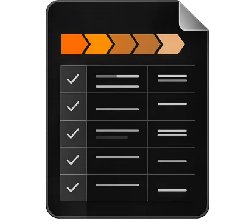
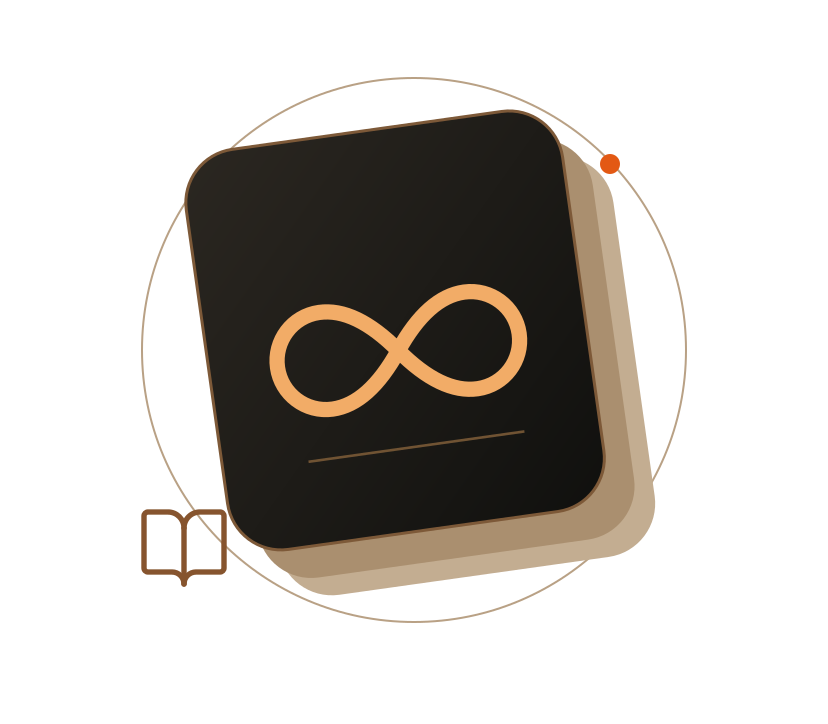
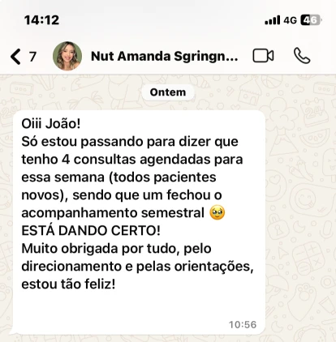
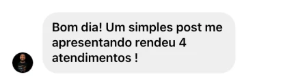
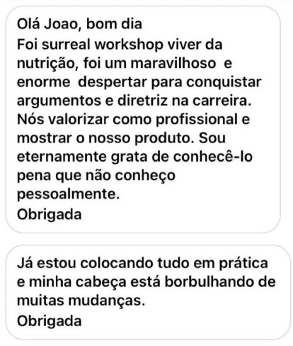

01
Antes da consulta
- Protocolo por fases para revisar o raciocínio clínico,
- Mapa da jornada para se situar em que momento o paciente está.
- Clareza do que observar e quais decisões podem estar pela frente.
Porém, a grande maioria ainda não sabe como transformar esse conhecimento em conduta segura.
Tem medo de errar na condução nutricional e acabar subestimando riscos ou perdendo oportunidades de ajuste.
Percebe que cada paciente reage de um jeito e falta um raciocínio organizado por fases pra guiar suas decisões.
Sente que está sempre voltando em aulas, artigos e prints porque não tem um material clínico simples pra consultar.
Gostaria de ter uma sequência lógica clara: o que observar, o que priorizar e o que evitar em cada momento do uso.
O que te falta não é mais conteúdo ou estudar mais. Você só precisa de um protocolo prático que organize sua atuação com pacientes em uso de análogos de GLP-1/GIP, do início ao fim do processo.
A ideia não é virar mais uma pasta de PDFs esquecida, mas ser um recurso de uso real, em três momentos principais:
Dessa forma, o protocolo deixa de ser “mais um curso” e passa a funcionar como uma ferramenta de apoio à decisão, sempre que você estiver diante de um paciente em uso de GLP-1/GIP.
Em vez de mais horas de aula, você terá um conjunto de materiais pensados para a rotina real de consultório:
Organizado para avaliação, prescrição nutricional e acompanhamento.
Aulas curtas, diretas e organizadas em uma sequência lógica para você entender:

Um material visual que mostra, de forma clara:
Para uso antes, durante e depois das consultas:
2 a 3 casos reais, comentados passo a passo, para você ver o raciocínio aplicado:
Para levar a estrutura ao consultório.
Organize o uso dos materiais na sua rotina e leve a estrutura do protocolo aos atendimentos.

Você terá ACESSO VITALÍCIO ao treinamento e aos materiais, incluindo atualizações futuras.
Tudo isso organizado para que você consiga aplicar o protocolo já nos próximos atendimentos, sem precisar “reassistir tudo” sempre que tiver dúvida.
Quando você pensa em se sentir seguro na condução com GLP-1/GIP, normalmente as opções são:
O Protocolo GLP-1/GIP na Prática foi pensado justamente pra encurtar esse caminho: concentrar, em um único material clínico, a estrutura que você levaria muito mais tempo (e dinheiro) pra construir sozinho.



Se você quer organizar sua atuação com GLP-1/GIP com mais clareza, segurança e estrutura, esse material foi feito para você.
O Protocolo GLP-1 na Prática não foi pensado como “mais um curso longo”, mas como um material clínico de consulta, que você pode usar sempre que precisar.
Por isso, o acesso vitalício ao protocolo completo – com treinamento em vídeo, materiais de apoio, mapas, checklists, casos clínicos e roteiro de acompanhamento, fica por:
ou R$297,00 à vista
É um investimento único para ter, na sua rotina, uma estrutura clara de manejo com GLP-1/GIP que você consegue aplicar já nos próximos atendimentos.
QUERO O PROTOCOLO GLP-1 NA PRÁTICA + WORKSHOP DE IMPLEMENTAÇÃONa prática, continuar sem um protocolo organizado costuma ter um custo silencioso:
Cada novo paciente vira um “caso isolado”, em vez de seguir uma lógica por fases.
Você perde tempo revendo aula, artigo e print sempre que aparece uma situação diferente.
A insegurança na tomada de decisão aumenta, mesmo estudando cada vez mais.
Fica mais difícil perceber padrões, antecipar problemas e ajustar a estratégia na hora certa.
O acompanhamento vira algo reativo, e não um processo pensado do início ao fim.
E, com o tempo, isso impacta diretamente na confiança do paciente no seu trabalho.
O Protocolo GLP-1/GIP na Prática existe justamente pra encurtar esse caminho: Te dar uma base clara, por fases, pra você decidir com mais segurança nos casos que já estão chegando no seu consultório.
Eu sou o João Paulo Mendes, nutricionista, professor e mentor, com mais de 15 anos de atuação e mais de 3 mil alunos formados.
Ao longo da minha trajetória, sempre tive uma preocupação central: não basta saber muito sobre um tema, é preciso conseguir transformar esse conhecimento em conduta clara, segura e aplicável na rotina.
Foi exatamente por isso que eu criei o Protocolo GLP-1/GIP na Prática:
Minha proposta aqui é te entregar um conjunto de ferramentas que te ajudem a decidir melhor, com mais segurança e menos ruído, nos casos que você já atende.
QUERO ACESSAR O PROTOCOLO GLP-1/GIP NA PRÁTICAA proposta do Protocolo GLP-1 na Prática é ser um material clínico útil, e não “mais um curso” pra ficar parado.
Por isso, você tem 7 dias para acessar o conteúdo, conhecer a estrutura, revisar os materiais e decidir se ele realmente te ajuda a:
Se dentro desse prazo você sentir que não fez diferença pra você, é só enviar uma mensagem e pedir o reembolso. Sem burocracia.